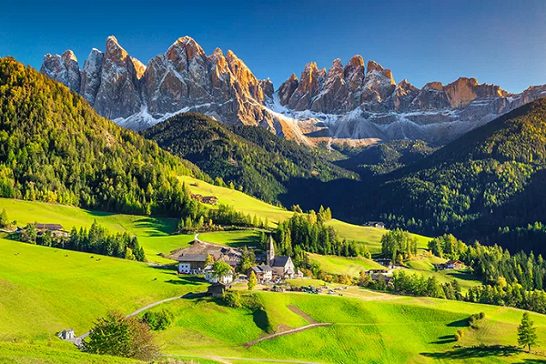
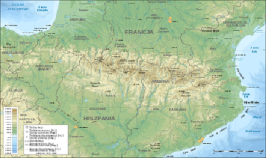
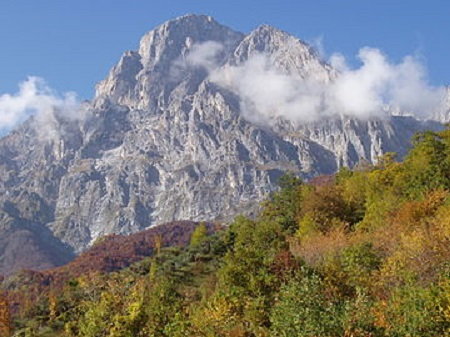
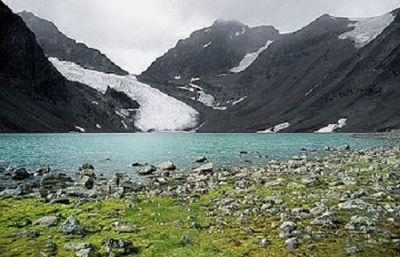
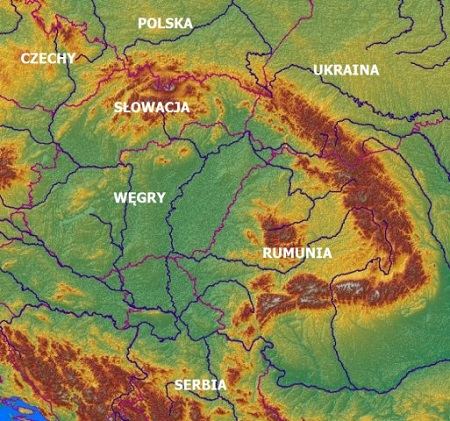
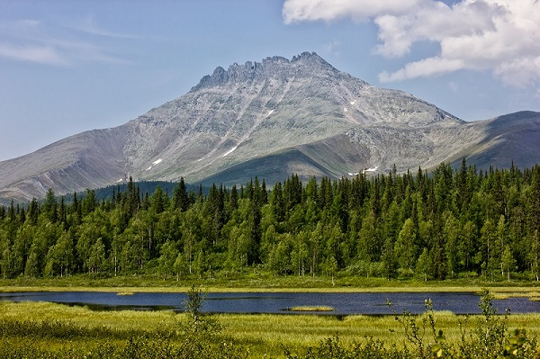

Europejskie góry
W Europie jest naprawdę wiele łańcuchów górskich. Do tych największych należą:- Alpy
- Pireneje
- Apeniny
- Góry Skandynawskie
- Karpaty
- Ural
Alpy
Jest to najwyższy łańcuch górski w Europie, najwyższy szczyt Mont Blanc ma 4808 m n.p.m.Swoim obszarem rozlewa się na osiem państw i ma 220 tysięcy kilometrów kwadratowych.

źródło
Pireneje
W porównaniu do pozostałych łańcuchów na tej liście jest niewielki, bo ma zeledwie 450 km długości i około 55 tys kilometrów kwadratowych powierzchni.Znajdują się na pograniczu Francji i Hiszpani oraz w całości obejmuje Andorę.

źródło
Apeniny
Jest to włoski łańcuch ciągnące się przez Półwysep Apeniński na długości 1350 km, szeroki od 40 do 200 km.Najwyższy szczyt-Corno Grande ma 2912m n.p.m.

źródło
Góry Skandynawskie
To malowniczy łańcuch ma prawie dwa tysiące kilometrów długości i jak sama jego nazwa wskazuje znajduje się w Skandynawii.Wyjątkowe dla tych gór są fiordy. Najdłuższy nazwany Sognefjord ma ponad dwieście kilometrów! Wysokością są zbliżone do Tatr. Najwyższy szczyt znajduje się na terenie Pparku Narodowego Jotunheimen w Norwegii i ma niecałe dwa i poł kilometra nad poziomem morza.
Do wyprawy w ten rejon(zwłaszcza z namiotem, ale nie tylko) zachęca liberalne prawo dotyczące właśnie biwakowania. Wybierając się w taką podróż pamiętajcie stosować się do zasady "Leave no trace".

źródło
Karpaty
Powieszchnią podobnie jak Alpy obejmują osiem państw (w tym Polskę) i są od nich o około 30 tys kilometrów kwadratowych mniejsze.Karpaty są odrobinę niższe od Apenin, Gerlach najwyższy szczyt ma 2655 m n.p.m.

źródło
Ural
Jest to łańcuh uważany za granicę pomiędzy Europą a Azją. Jego najwyższym szczytem jest Narodnaja 1895m n.p.m. Ten łańcuch ma ponad dwa tysięce kilometrów długości i znajduje się w całości na terenie Rosji.
źródło